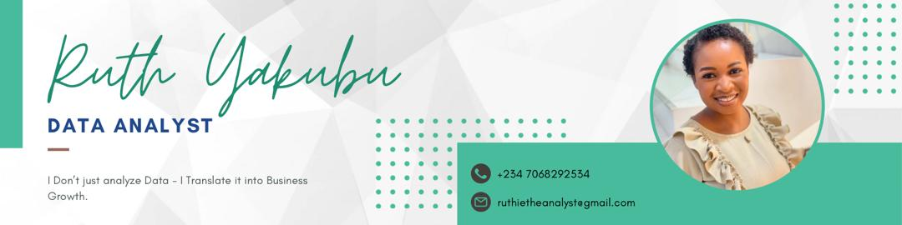

Hi! I'm Ruth Yakubu, a Data Analyst
who loves turning complex data into clear, actionable insights. I use tools like SQL, Tableau, Excel and PowerBI to uncover patterns and power smarter decisions.
Portfolio
Take a look at my projects to see how I bring clarity to complexity, and feel free to connect. I'm always open to data conversations, collaboration, and continuous learning.

POWERBI

SQL

EXCEL

TABLEAU

R
About Me

Hi, I’m Ruth Yakubu — Freelance Data Analyst | Sales Insight Strategist | Data Analytics Tutor
I’m a data-driven problem solver with a passion for uncovering meaningful insights that empower smarter decisions. My background is a unique blend of sales expertise, analytics mastery, and a passion for educating others — which allows me to bridge the gap between business needs and technical solutions.
I’ve worked with diverse datasets, including flight ticket pricing data with over 300,000+ rows, helping to derive trends, clean messy data, and visualize key insights using tools like SQL, Python, Excel, and Tableau. My work goes beyond just crunching numbers — I help businesses and individuals understand what the data is saying and how to act on it.
WHAT I DO
1. Freelance Data Analysis
As a freelance data analyst, I support startups, entrepreneurs, and business teams by transforming raw data into powerful stories. I analyze performance, optimize operations, and build dashboards that guide decision-making. Whether it's tracking sales performance, customer trends, or market behavior — I provide insights that lead to action.
2. Sales Insight & Business Strategy
With a solid background in retail and direct sales, I understand how real-world business works. I apply analytics to solve real problems — identifying customer patterns, improving sales funnels, and boosting conversion rates. I know the numbers, and I know the people behind them.
3. Data Analytics Tutoring
I’m passionate about helping others grow in their data journey. Through 1-on-1 sessions, online content, and community support, I break down complex analytics tools and concepts into digestible lessons. I specialize in helping beginners and business owners get comfortable with Excel, SQL, Python, and Tableau — turning confusion into confidence.
MY TOOLS & SKILLS
SQL – for querying large datasets and uncovering trends
Python – for data cleaning, analysis, and automation
Excel & Google Sheets – for fast, flexible, and powerful business analysis
Tableau – for building dynamic dashboards and visuals
Data Storytelling – for communicating insights in clear, engaging ways
Sales Strategy – translating insights into business results
Teaching & Mentorship – nurturing future analysts and data-savvy professionals
WHY WORK WITH ME?
You want more than charts — you want clarity and direction
You’re overwhelmed by messy data and need someone to simplify it
You want to upskill in analytics or teach your team the tools
You value collaboration, communication, and a data partner who understands business goals
Explore my projects, connect with me, or book a session.
Contact
Let’s Connect!
Whether you’re a small business owner, aspiring analyst, or startup founder — if you're ready to make smarter, data-driven decisions, I’m here to help.
Whether you want to learn data analytics, collaborate on a project, or need expert support to turn complex data into clear, actionable insights — I’d love to connect with you.
Feel free to reach out via the form below or email me directly. I typically respond within 24 hours.
Let’s turn your data into something powerful — together.